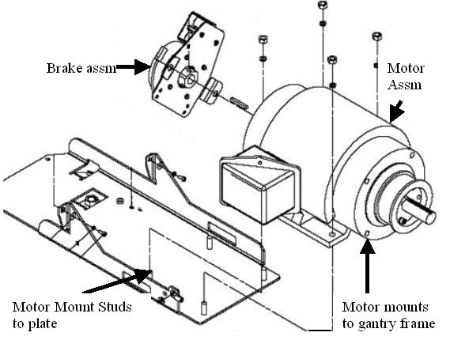

Illustration 4: Removing the four (4) hex screws will release motor

| NOTE: | Screws may be very tight, be careful when initially loosening motor mount screws. |
Illustration 3: Axial motor mounts

Illustration 4: Removing the four (4) hex screws will release motor